Redhat 4.8的安装
这个专题是关于如何在redhat 4.8上安装orale 9.2.0.8
系统及数据库安装文件
Redhat 4.8系统:
https://pan.baidu.com/s/1pL2owOF
Oracle 9i 安装文件
https://pan.baidu.com/s/1mhNdyXi
第一章节是安装redhat 4.8操作系统
注意事项
-
系统安装选择软件包的时候:
-
Desktops 需要全部选择
-
Development需要全部选择
安装开始
点击下一步
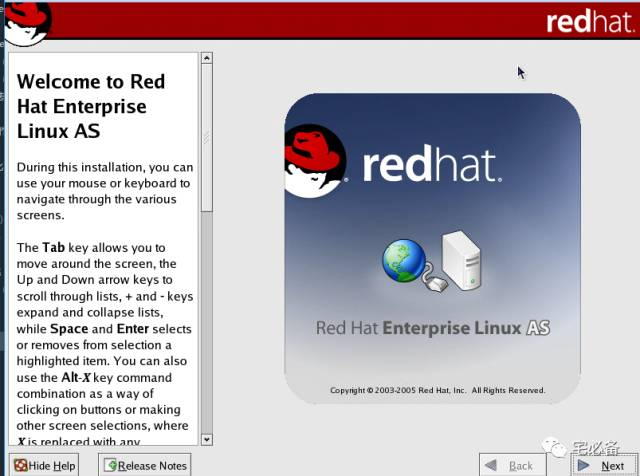
选择安装语言
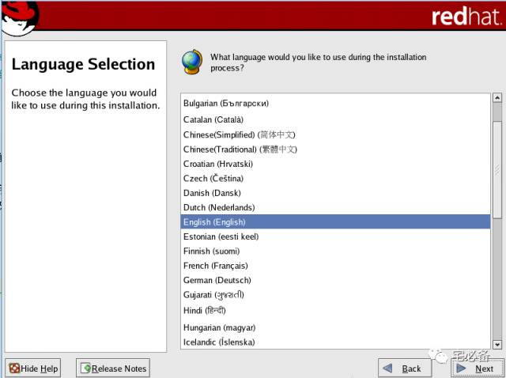
选择键盘模式
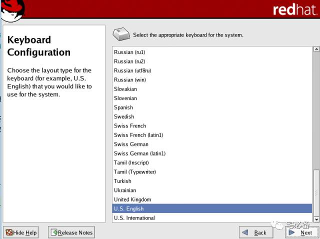
选择手动分区
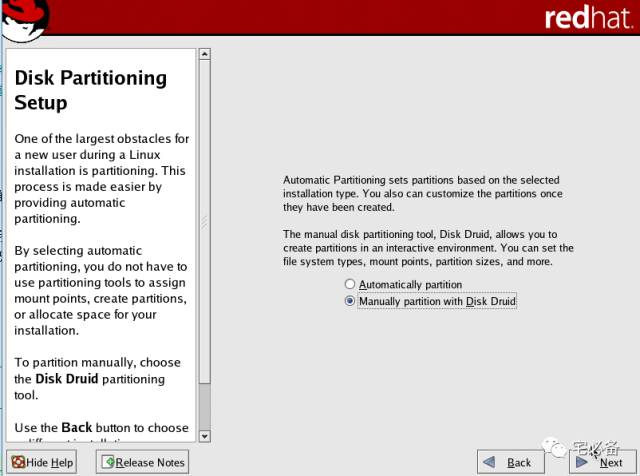
新建lvm分区
/oradata放置数据文件
/oralog放置归档文件
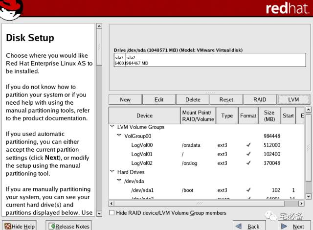
点击下一步
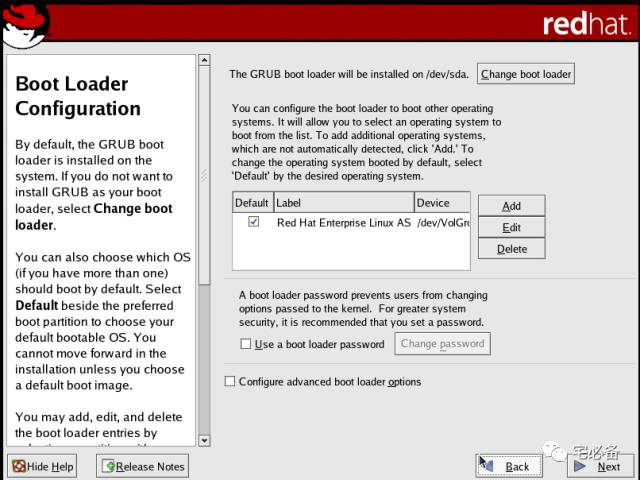
设置ip地址及主机名
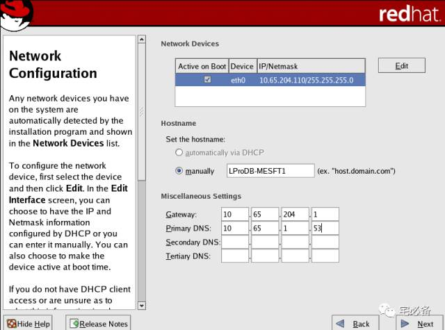
禁用防火墙和selinux
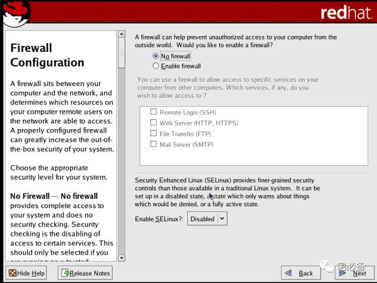
选择额外的语言包
勾选Chinese(P.R. of China)
勾选Chinese(Taiwan)
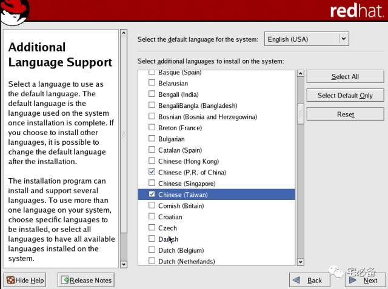
选择时区
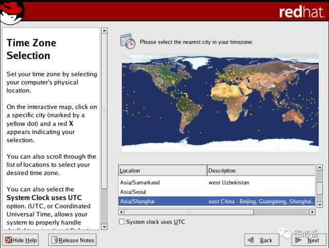
设置root密码
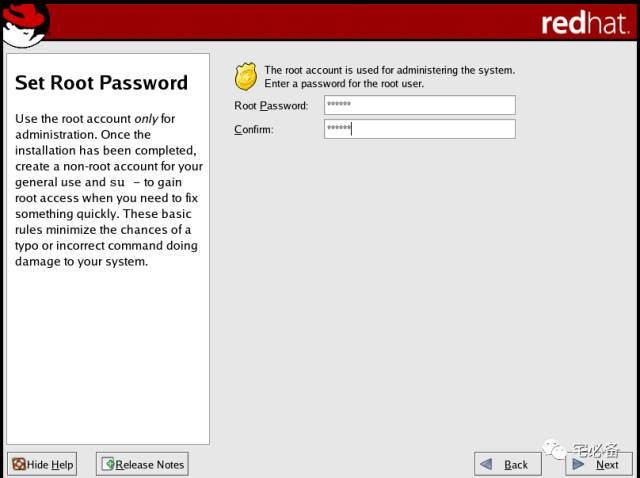
安装包的选择
重要:
Desktops 需要全部选择
Development需要全部选择
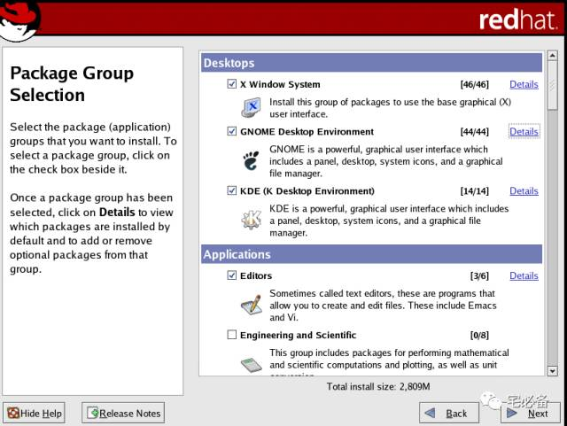
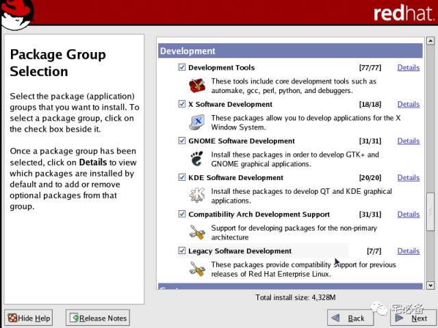
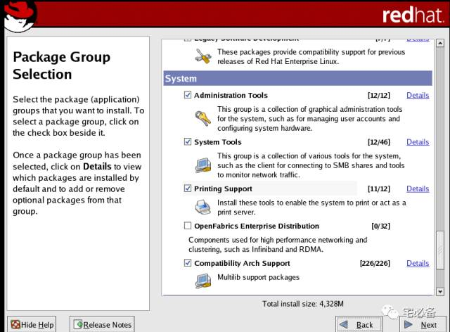
点击下一步
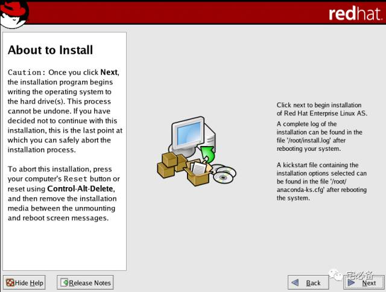
开始安装
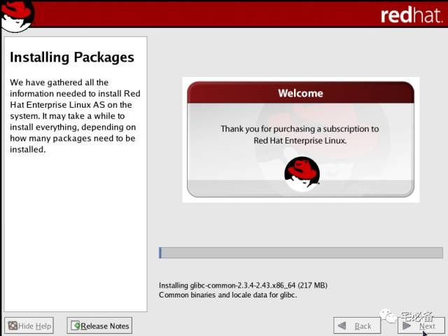
安装完成
点击reboot重启后进行最后设置
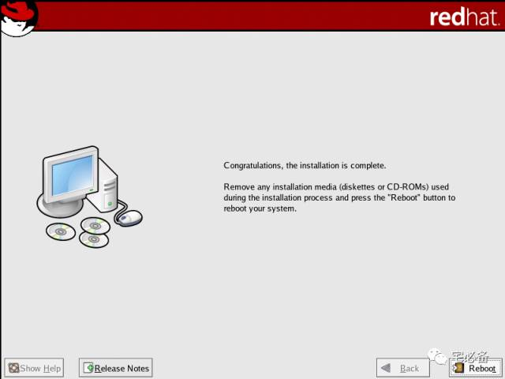
点击下一步
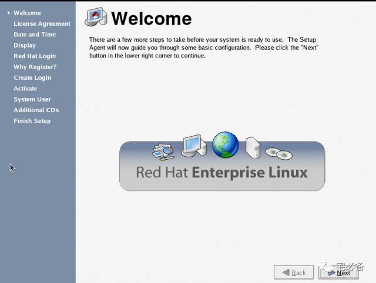
同意条款
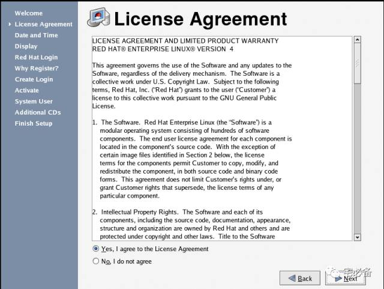
设置ntp服务器
这里也可手动设置时间
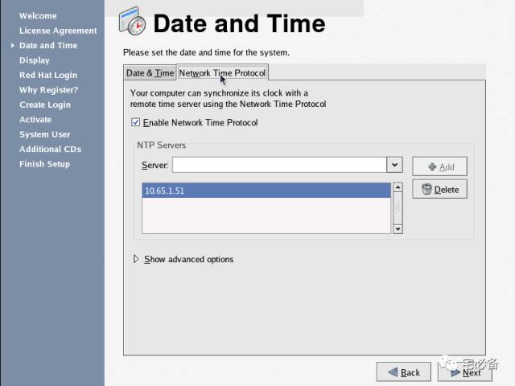
设置分辨率
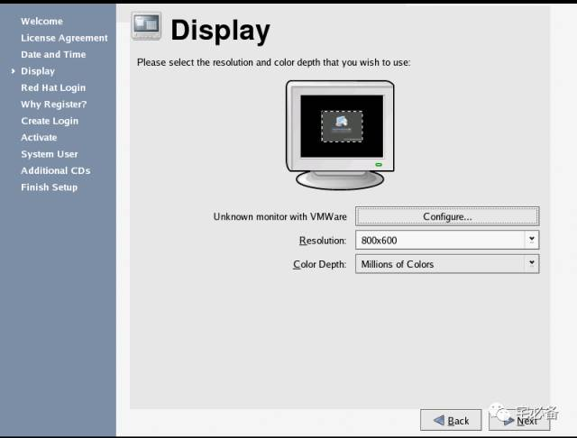
设置登陆redhat
这里我们不需要登陆
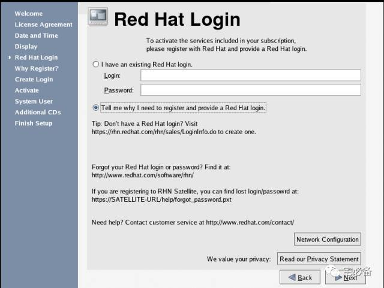
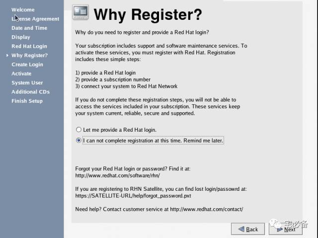
创建新用户
这里我们不创建
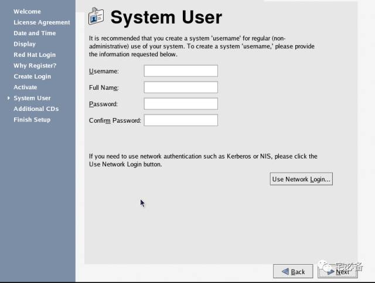
添加额外CD
这里我们不需要
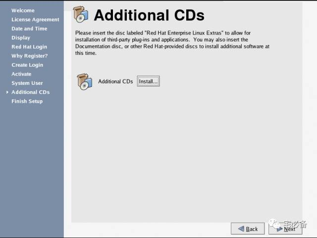
点击下一步
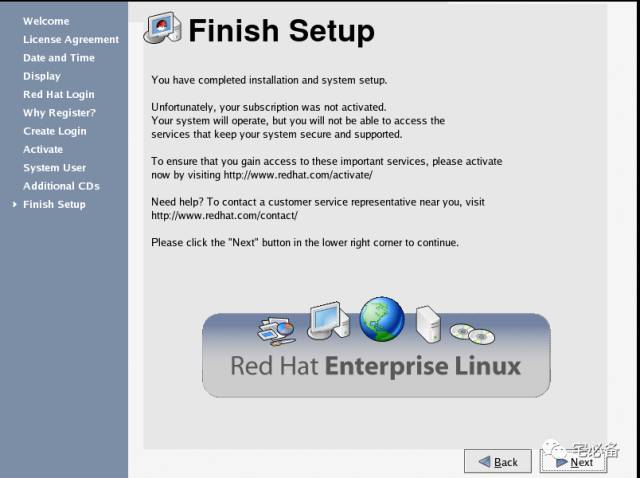
到这里redhat 4.8已安装完成，下一步是系统环境的设置